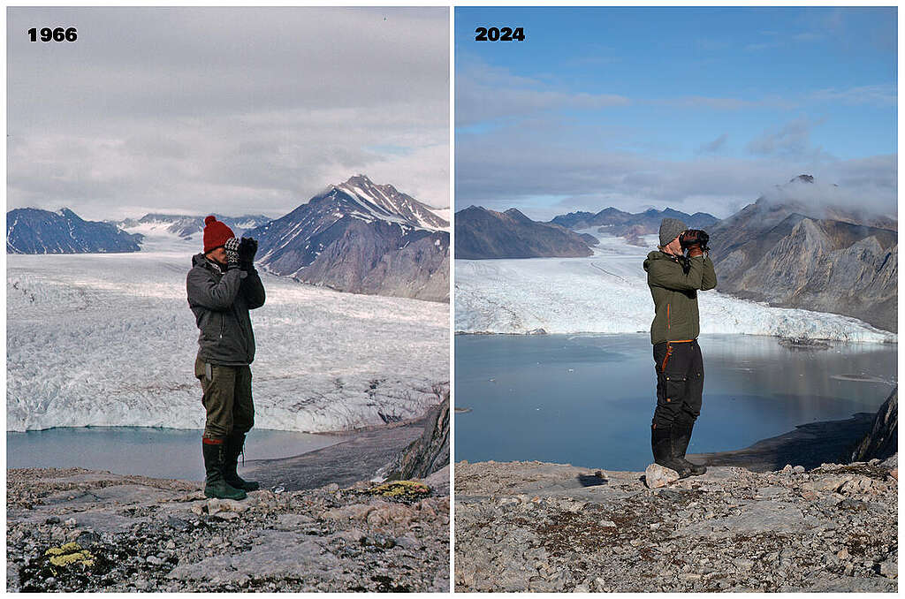
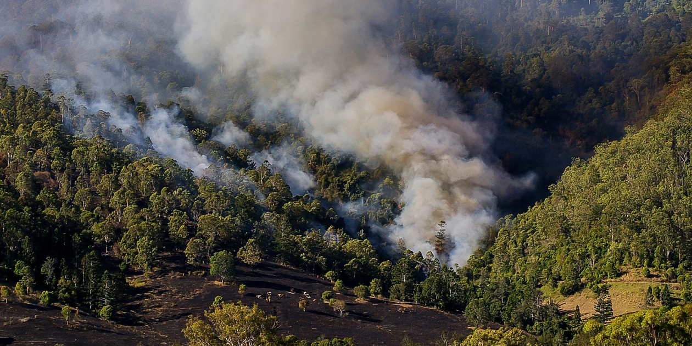

Introducción
El cambio climático se refiere a variaciones duraderas en las temperaturas y patrones meteorológicos de la Tierra. Desde la era preindustrial, la Tierra se ha calentado en más de 1 °C y la evidencia científica muestra que la mayor parte de ese calentamiento es causada por actividades humanas, principalmente la quema de combustibles fósiles y los cambios de uso de suelo (deforestación).
El aumento de temperatura provoca efectos claros y observables: derretimiento de glaciares y casquetes, aumento del nivel del mar, y mayor frecuencia e intensidad de eventos extremos (olas de calor, incendios, sequías e inundaciones). Estos cambios afectan ecosistemas, economías y la salud de millones de personas.
 
Causas
Las principales causas del cambio climático actual son:
- Emisiones de gases de efecto invernadero: quema de carbón, petróleo y gas para energía y transporte.
- Deforestación: pérdida de bosques que absorben CO₂.
- Agricultura intensiva: genera metano (ganado) y óxidos nitrosos (fertilizantes).
- Procesos industriales: emisiones y uso de materiales que liberan gases y contaminantes.
- Cambios en el uso del suelo y urbanización: reducen la capacidad natural de regulación climática.
Consecuencias
- Aumento de la temperatura media global y olas de calor más intensas.
- Eventos meteorológicos extremos más frecuentes e intensos (inundaciones, sequías, huracanes).
- Retroceso de glaciares y subida del nivel del mar, poniendo en riesgo zonas costeras.
- Pérdida de biodiversidad y mayor riesgo de extinción de especies.
- Impactos en la salud: golpes de calor, empeoramiento de enfermedades respiratorias y expansión de vectores (p.ej. mosquitos).
- Desplazamientos forzados y riesgos para la seguridad alimentaria y el agua.
Enlaces de interés
Muertes relacionadas
El cambio climático produce muertes directas e indirectas: por olas de calor, contaminación del aire, eventos extremos y enfermedades transmitidas por vectores. La OMS ha estimado que entre 2030 y 2050 el cambio climático podría causar aproximadamente 250.000 muertes adicionales por año debido a desnutrición, malaria, diarrea y estrés por calor.
Ejemplo de datos y estimaciones
| Región / Año (ej.) | Muertes por calor extremo | Muertes por fenómenos climáticos | Total estimado anual |
|---|---|---|---|
| Europa (2022) | 61.000 | 12.000 | 73.000 |
| América del Norte | 20.000 | 9.000 | 29.000 |
| Asia | 100.000 | 40.000 | 140.000 |
| África | 30.000 | 25.000 | 55.000 |
| Mundial (estimado) | 211.000 | 86.000 | 297.000 |
(Observación: estas cifras de ejemplo vienen de estudios y estimaciones — la forma en que se calculan puede variar según la metodología y los años analizados).